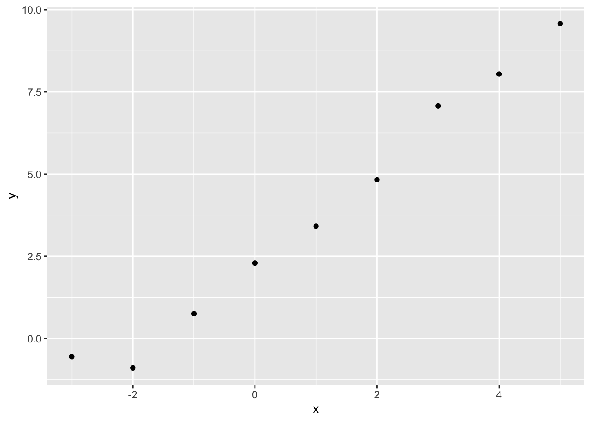

Code
llNormal <- function(pars, y, X){
beta <- pars[1:ncol(X)]
sigma2 <- exp(pars[ncol(X)+1])
-1/2 * (sum(log(sigma2) + (y - (X%*%beta))^2 / sigma2))
}In the first part of the course, I stated that statistical model fitting, within the generalised model framework presented in King, Tomz, and Wittenberg (2000), involves adjusting candidate values for elements of \(\beta = \{\beta_0, \beta_1, ..., \beta_K \}\) such that the difference between what the model predicts given some predictor values, \(Y_i | X_i\), and what has been observed alongside the predictors, \(y_i\), is minimised on average1 in some way.
The aim of this post is to show how this process is typically implemented in GLMs, using likelihood theory.
Statisticians and more advanced users of statistical models often divide themselves into ‘frequentists’ and ‘Bayesians’. To some extent the distinction is really between ‘improper Bayesians’ and ‘proper Bayesians’, however, as Bayes’ Rule is at the root of both approaches. Bayes’ Rule is:
\[ P(A|B) = \frac{P(B|A)P(A)}{P(B)} \]
Note in the above the left hand side of the equation is \(P(A|B)\) and the right hand side of the equation includes \(P(B|A)\). To write it out as awkward prose, therefore, Bayes’ Rule is a way of expressing that given this in terms of this given that.
As with much of algebra, \(A\) and \(B\) are just placeholders. We could instead use different symbols instead, such as:
\[ P(\tilde{\theta} | y) = \frac{P(y | \tilde{\theta})P(\tilde{\theta})}{P(y)} \]
Likelihood theory offers a way of thinking about how good a model is in terms of its relationship to the data. According to King (1998) (p. 59), it can be expressed as:
\[ L(\tilde{\theta}| y) = k(y) P(y | \tilde{\theta}) \]
Or
\[ L(\tilde{\theta} | y) \propto P(y | \tilde{\theta}) \]
Where \(\tilde{\theta}\) is a proposed parameter or parameter combination for the model, and \(y\) is the observed outcome.2
The important thing to note is that both Bayes’ Rule and Likelihood Theory are ways of expressing this given that as a function of that given this. Specifically, the model given the data, as a function of the data given the model. 3
When, many years ago, I completed the course from this modelling framework is most associated, a hazing ritual employed near the start of the course was to require participants to derive the likelihood of different model specifications. However, I don’t feel like hazing myself right now, so instead we can use the derivation shown on slide 8 of these slides:
\[ L(\beta, \sigma^2 | y) = \prod{L(y_i | \mu_i, \sigma^2)} \]
Where \(\mu = X \beta\), \(i\) indicates an observation in the data (a row of \(X\) when \(X\) is in matrix form), and \(\prod\) indicates the likelihoods from each observation should be multiplied with each other to derive the overall likelihood for all observed data.
In practice the log Likelihood, rather than the likelihood itself, is used, because this allows calculation of a sum of terms (\(\sum\)) rather than product of terms (\(\prod\)), and the latter tends to be computationally easier to calculate.
As we are interested only in how likelihood varies as a function of those model parameters we wish to estimate, \(\theta = \{\beta, \sigma^2\}\), some of the terms in the log likelihood expression can be omitted, leaving us with:
\[ \log{L(\beta, \sigma^2 | y)} \doteq \sum{-\frac{1}{2}[\log{\sigma^2} + \frac{(y_i - X_i\beta)^2}{\sigma^2}]} \]
For all the complexity of the above expression, at heart it takes three inputs:
And returns one value, the log likelihood \(\log{L(.)}\).
To reiterate, we can’t change the data, but we can keep changing the candidate parameters \(\theta\). Each time we do so, \(\log{L(.)}\) will change too.
The aim of model calibration, in the Likelihood framework, is to maximise the Likelihood. The parameter set that maximises the likelihood is also the parameter set that maximises the log likelihood.
To continue the example from the slides, we can write out a function for calculating the log likelihood of standard linear regression as follows:
llNormal <- function(pars, y, X){
beta <- pars[1:ncol(X)]
sigma2 <- exp(pars[ncol(X)+1])
-1/2 * (sum(log(sigma2) + (y - (X%*%beta))^2 / sigma2))
}In the above, pars is (almost but not quite) \(\theta\), the parameters to estimate. For standard linear regression \(\theta = \{\beta, \sigma^2\}\), where \(\beta = \{\beta_0, \beta_1, ..., \beta_k\}\), i.e. a vector of beta parameters, one for each column (variable) in \(X\), the predictor matrix of observations; this is why \(beta\) is selected from the first K values in pars where K is the number of columns in \(X\).
The last value in pars is used to derive the proposed \(\sigma^2\). If we call this last value eta (\(\eta\)), then we can say \(\sigma^2 = e^{\eta}\). So, whereas \(\theta\) is a vector that ‘packs’ \(\beta\) and \(\sigma^2\) into a single ordered series of values, pars packs eta in place of \(\sigma^2\). This substitution of eta for \(\sigma^2\) is done to make it easier for standard parameter fitting algorithms to work, as they tend to operate over the full real number range, rather than just over positive values.
In order to illustrate how the log likelihood function llNormal works in practice, let’s construct a simple toy dataset \(D\), and decompose \(D = \{y, X\}\), the two types of data input that go into the llNormal function.
# set a seed so runs are identical
set.seed(7)
# create a main predictor variable vector: -3 to 5 in increments of 1
x <- (-3):5
# Record the number of observations in x
N <- length(x)
# Create a response variable with variability
y <- 2.5 + 1.4 * x + rnorm(N, mean = 0, sd = 0.5)
# bind x into a two column matrix whose first column is a vector of 1s (for the intercept)
X <- cbind(rep(1, N), x)
# Clean up names
colnames(X) <- NULLIn the code above we have created \(y\), a vector of nine observed responses; and \(X\), a matrix of predictors with two columns (the number of variables for which \(beta\) terms need to be estimated) and nine rows (the number of observations).
Graphically, the relationship between x and y looks as follows:
library(tidyverse)
tibble(x=x, y=y) |>
ggplot(aes(x, y)) +
geom_point()
In this toy example, but almost never in reality, we know the correct parameters for the model. These are \({\beta_0 = 2.5, \beta_1 = 1.4}\) and \(\sigma^2 = 0.25\). 4 Soon, we will see how effectively we can use optimisation algorithms to recover these true model parameters. But first, let’s see how the log likelihood varies as a function jointly of different candidate values of \(\beta_0\) (the intercept) and \(\beta_1\) (the slope parameter), if we already set \(\sigma^2\) to 0.25.
candidate_param_values <- expand_grid(
beta_0 = seq(-5, 5, by = 0.1),
beta_1 = seq(-5, 5, by = 0.1)
)
feed_to_ll <- function(b0, b1){
pars <- c(b0, b1, log(0.25))
llNormal(pars, y, X)
}
candidate_param_values <- candidate_param_values |>
mutate(
ll = map2_dbl(beta_0, beta_1, feed_to_ll)
)candidate_param_values |>
ggplot(aes(beta_0, beta_1, z = ll)) +
geom_contour_filled() +
geom_vline(xintercept = 0) +
geom_hline(yintercept = 0) +
labs(
title = "Log likelihood as a function of possible values of beta_0 and beta_1",
x = "beta0 (the intercept)",
y = "beta1 (the slope)"
)Looking at this joint surface of values, we can see a ‘hotspot’ where \(\beta_0\) is around 2.5, and \(\beta_1\) is around 1.4, just as we should expect. We can check this further by filtering candidate_param_values on the highest observed values of ll.
candidate_param_values |>
filter(ll == max(ll))# A tibble: 1 × 3
beta_0 beta_1 ll
<dbl> <dbl> <dbl>
1 2.4 1.4 1.41Previously, we ‘cheated’ a bit when using the log likelihood function, fixing the value for one of the parameters \(\sigma^2\) to the value we used when we generated the data, so we could instead look at how the log likelihood surface varied as different combinations of \(\beta_0\) and \(\beta_1\) were plugged into the formula. \(\beta_0\) and \(\beta_1\) values ranging from -5 to 5, and at steps of 0.1, were considered: 101 values of \(\beta_0\), 101 values of \(\beta_1\), and so over 10,0005 unique \(\{\beta_0, \beta_1\}\) combinations were stepped through. This approach is known as grid search, and seldom used in practice (except for illustration purposes) because the number of calculations involved can very easily get out of hand. For example, if we were to use it to explore as many distinct values of \(\sigma^2\) as we considered for \(\beta_0\) and \(\beta_1\), the total number of \(\{\beta_0, \beta_1, \sigma^2 \}\) combinations we would crawl through would be over 100,000 6 rather than over 10,000.
One feature we noticed with the likelihood surface over \(\beta_0\) and \(\beta_1\) in the previous post is that it appears to look like a hill, with a clearly defined highest point (the region of maximum likelihood) and descent in all directions from this highest point. Where likelihood surfaces have this feature of being single-peaked in this way (known as ‘unimodal’), then a class of algorithms known as ‘hill climbing algorithms’ can be applied to find the top of such peaks in a way that tends to be both quicker (fewer steps) and more precise than the grid search approach used for illustration in the previous post.
optim for parameter point estimation: our Robo-ChauffeurNote how the llNormal function takes a single argument, pars, which packages up all the specific candidate parameter values we want to try out. In our previous post, we also had a ‘feeder function’, feed_to_ll, which takes the various \(\beta\) candidate values from the grid and packages them into pars. In our previous post, we had to specify the candidate values to try to feed to llNormal packages inside pars.
But we don’t have to do this. We can instead use an algorithm to take candidate parameters, try them out, then make new candidate parameters and try them out, for us. Much as a taxi driver needs to know where to meet a passenger, but doesn’t want the passenger to tell them exactly which route to take, we just need to specify a starting set of values for the parameters to optimise. R’s standard way of doing this is with the optim function. Here’s it in action:
optim_results <- optim(
# par contains our initial guesses for the three parameters to estimate
par = c(0, 0, 0),
# by default, most optim algorithms prefer to search for a minima (lowest point) rather than maxima
# (highest point). So, I'm making a function to call which simply inverts the log likelihood by multiplying
# what it returns by -1
fn = function(par, y, X) {-llNormal(par, y, X)},
# in addition to the par vector, our function also needs the observed output (y)
# and the observed predictors (X). These have to be specified as additional arguments.
y = y, X = X
)
optim_results$par
[1] 2.460571 1.375421 -1.336209
$value
[1] -1.51397
$counts
function gradient
216 NA
$convergence
[1] 0
$message
NULLThe optim function returns a fairly complex output structure, with the following components:
par: the values for the parameters (in our case \(\{\beta_0, \beta_1, \eta \}\)) which the optimisation algorithm ended up with.
value: the value returned by the function fn when the optim routine was stopped.
counts: the number of times the function fn was repeatedly called by optim before optim decided it had had enough
convergence: whether the algorithm used by optim completed successfully (i.e. reached what it considers a good set of parameter estimates in par), or not.
In this case, convergence is 0, which (perhaps counterintuitively) indicates a successful completion. counts indicates that optim called the log likelihood function 216 times before stopping, and par indicates values of \(\{\beta_0 = 2.46, \beta_1 = 1.38, \eta = -1.34\}\) were arrived at. As \(\sigma^2 = e^\eta\), this means \(\theta = \{\beta_0 = 2.46, \beta_1 = 1.38, \sigma^2 = 0.26 \}\). As a reminder, the ‘true’ values are \(\{\beta_0 = 2.50, \beta_1 = 1.40, \sigma^2 = 0.25\}\).
So, the optim algorithm has arrived at pretty much the correct answers for all three parameters, in 216 calls to the log likelihood function, whereas for the grid search approach in the last post we made over 10,000 calls to the log likelihood function for just two of the three parameters.
Let’s see if we can get more information on exactly what kind of path optim took to get to this set of parameter estimates. We should be able to do this by specifying a value in the trace component in the control argument slot…
For comparison let’s see what lm and glm produce.
First lm:
toy_df <- tibble(
x = x,
y = y
)
mod_lm <- lm(y ~ x, data = toy_df)
summary(mod_lm)
Call:
lm(formula = y ~ x, data = toy_df)
Residuals:
Min 1Q Median 3Q Max
-0.6082 -0.3852 -0.1668 0.2385 1.1092
Coefficients:
Estimate Std. Error t value Pr(>|t|)
(Intercept) 2.46067 0.20778 11.84 6.95e-06 ***
x 1.37542 0.07504 18.33 3.56e-07 ***
---
Signif. codes: 0 '***' 0.001 '**' 0.01 '*' 0.05 '.' 0.1 ' ' 1
Residual standard error: 0.5813 on 7 degrees of freedom
Multiple R-squared: 0.9796, Adjusted R-squared: 0.9767
F-statistic: 336 on 1 and 7 DF, p-value: 3.564e-07\(\{\beta_0 = 2.46, \beta_1 = 1.38\}\), i.e. the same to 2 decimal places.
And now with glm:
mod_glm <- glm(y ~ x, data = toy_df, family = gaussian(link = "identity"))
summary(mod_glm)
Call:
glm(formula = y ~ x, family = gaussian(link = "identity"), data = toy_df)
Coefficients:
Estimate Std. Error t value Pr(>|t|)
(Intercept) 2.46067 0.20778 11.84 6.95e-06 ***
x 1.37542 0.07504 18.33 3.56e-07 ***
---
Signif. codes: 0 '***' 0.001 '**' 0.01 '*' 0.05 '.' 0.1 ' ' 1
(Dispersion parameter for gaussian family taken to be 0.3378601)
Null deviance: 115.873 on 8 degrees of freedom
Residual deviance: 2.365 on 7 degrees of freedom
AIC: 19.513
Number of Fisher Scoring iterations: 2Once again, \(\{\beta_0 = 2.46, \beta_1 = 1.38\}\)
In the above, we’ve successfully used optim, our Robo-Chauffeur, to arrive very quickly at some good estimates for our parameters of interest, \(\beta_0\) and \(\beta_1\), which are in effect identical to those produced by the lm and glm functions.
This isn’t a coincidence. What we’ve done the hard way is what the glm function (in particular) largely does ‘under the hood’.
optimal uncertaintyWhen using optim() above, we managed to get it to return a set of parameter values for our model that it thought was ‘best’, i.e. minimised the loss function specified by the log likelihood. These are known as point estimates, and are effectively the coefficients presented by lm or glm or equivalent statistical functions and packages. However optim() just returned these point estimates, without any indication of how uncertain we should be about these point estimates. A standard statistical model summary will tend to also report measures of uncertainty around the point estimates, in the form of standard errors. When these are implicitly combined with a Null hypothesis, namely that the ‘true’ value of a parameter may be zero, the point estimate together with its standard error allows the calculation of z values and p values.
How can we use optim() to return measures of uncertainty, which will allow the standard errors to be estimated as well as the point values?
We’ll start with a weird analogy to get an intuition for how this can be done with optim().
Imagine optim, your hill-finding robo-chauffeur, has taken you to the top of a likelihood surface. Then it leaves you there…
… and you’re blind, and have no shoes. (You also have an uncanny sense of your orientation, whether north-south, east-west, or some other angle.)
So, you know you’re at the top of the hill, but you can’t see what the landscape around you looks like. However, you still want to get a sense of this landscape, and how it varies around the spot you’re standing on.
What do you do?
If you’re playing along with this weird thought experiment, one approach would be to use your feet as depth sensors. You make sure you never stray from where you started, and to always keep one foot planted on this initial spot (which you understand to be the highest point on the landscape). Then you use your other foot to work out how much further down the surface is from the highest point as you venture away from the highest point in different directions.
Say you keep your left foot planted on the highest point, and make sure your right foot is always positioned (say) 10 cm horizontally from your left foot. Initially your two feet are arranged east-west; let’s call this 0 degrees. When you put your right foot down, you notice it needs to travel 2 cm further down to reach terra ferma relative to your left foot.
2cm at 0 degrees. You’ll remember that.
Now you rotate yourself 45 degrees, and repeat the same right foot drop. This time it needs to travel 3cm down relative to your left foot.
3cm at 45 degrees. You remember that too.
Now you rotate another 45 degrees, north-south orientation, place your right foot down; now it falls 5cm down relative to your left foot.
2cm at 0 degrees; 3cm at 45 degrees; 5cm at 90 degrees.
Now with this information, you try to construct the landscape you’re on top of with your mind’s eye, making the assumption that the way it has to have curved from the peak you’re on to lead to the drops you’ve observed is consistent all around you; i.e. that there’s only one hill, you’re on top of it, and it’s smoothly curved in all directions.
If you could further entertain the idea that your feet are infinitely small, and the gap between feet is also infinitely small (rather than the 10cm above), then you have the intuition behind this scary-looking but very important formula from King (1998) (p. 89):
\[ \widehat{V(\hat{\theta})} = - \frac{1}{n}[\frac{\delta^2lnL(\tilde{\theta}|y)}{\delta \tilde{\theta} \delta \tilde{\theta}^{'}}]^{-1}_{\tilde{\theta} = \hat{\theta}} \]
What this is saying, in something closer to humanese, is something like:
Our best estimate of the amount of uncertainty we have in our estimates is a function of how much the likelihood surface curves at the highest point on the surface. (It also gets less uncertain, the more observations we have).
Amongst the various bells, whistles and decals in the previous formula is the superscript \((.)^{-1}\). This means invert, which for a single value means \(\frac{1}{.}\) but for a matrix means something conceptually the same but technically not.
And what’s being inverted in the last formula? A horrible-looking expression, \([\frac{\delta^2lnL(\tilde{\theta}|y)}{\delta \tilde{\theta} \delta \tilde{\theta}^{'}}]_{\tilde{\theta} = \hat{\theta}}\), that’s basically an answer to the question of how curvy is the log likelihood surface at its peak position?
Within King (1998) (p.89, eq. 4.18), this expression (or rather the negative of the term) is defined as \(I(\hat{\theta} | y)\), where \(I(.)\) stands for information.
So, the algebra are saying
Uncertainty is inversely related to information
Or perhaps even more intuitively
The more information we have, the less uncertain we are
Of course this makes sense. If you ask someone “How long will this task take?”, and they say “Between one hour and one month”, they likely have less information about how long the task will actually than if they had said “Between two and a half and three hours”. More generally:
This is, fundamentally, what the blind and barefoot person in the previous analogy is trying to achieve: by feeling out the local curvature around the highest point, they are trying to work out how much information they have about different pieces of the model. The curvature along any one dimension of the surface (equivalent to the 0 and 90 degree explorations) indicates how much information there is about any single coefficient, and the curvature along the equivalent of a 45 degree plane gives a measure of how associated any two coefficients tend to be.
With these many analogies and equations spinning in our heads, let’s now see how these concepts can be applied in practice.
optim() to return this informationHaving reminded myself of the particular options for optim that are typically used to report parameter uncertainty, let’s run the follows:
fuller_optim_output <- optim(
par = c(0, 0, 0),
fn = llNormal,
method = "BFGS",
control = list(fnscale = -1),
hessian = TRUE,
y = y,
X = X
)
fuller_optim_output$par
[1] 2.460675 1.375424 -1.336438
$value
[1] 1.51397
$counts
function gradient
80 36
$convergence
[1] 0
$message
NULL
$hessian
[,1] [,2] [,3]
[1,] -3.424917e+01 -3.424917e+01 2.727840e-05
[2,] -3.424917e+01 -2.625770e+02 -2.818257e-05
[3,] 2.727840e-05 -2.818257e-05 -4.500002e+00We have used a slightly different algorithm (‘BFGS’), and a different way of specifying the function to search over (using fnscale = -1 to invert the likelihood), but we have the same par estimates as before: \(\beta = \{\beta_0 = 2.46, \beta_1 = 1.38\}\). So the changes we’ve made to the optim arguments haven’t changed what it estimates.
One new argument we’ve set in optim is hessian = TRUE. Hessian is a kind of coarse fabric made from vegetable waste, typically woven in a criss-crossing, grid-like pattern. Hessian matrices are matrices of second derivatives, as described in the wikipedia article. 7 If you can bear to recall the really complex expression above, for calculating the curvature around a point on a surface, you’ll recall it’s also about second derivatives.
None of this is a coincidence. The hessian component of the optim output above contains what we need.
hess <- fuller_optim_output$hessian
hess [,1] [,2] [,3]
[1,] -3.424917e+01 -3.424917e+01 2.727840e-05
[2,] -3.424917e+01 -2.625770e+02 -2.818257e-05
[3,] 2.727840e-05 -2.818257e-05 -4.500002e+00You might notice that the Hessian matrix is square, with as many columns as rows. And, that the number of columns (or rows) is equal to the number of parameters we have estimated, i.e. three in this case.
You might also notice that the values are symmetrical about the diagonal running from the top left to the bottom right.
Again, this is no accident.
Remember that variation is inversely related to information, and that \((.)^{-1}\) is the inversion operator on \(I(.)\), the Information Matrix. Well, this Hessian is (pretty much) \(I(.)\). So let’s see what happens when we invert it (using the solve operator):
inv_hess <- solve(-hess)
inv_hess [,1] [,2] [,3]
[1,] 3.357745e-02 -4.379668e-03 2.309709e-07
[2,] -4.379668e-03 4.379668e-03 -5.397790e-08
[3,] 2.309709e-07 -5.397790e-08 2.222221e-01As with hess, inv_hess is symmetric around the top-left to bottom-right diagonal. For example, the value on row 2 and column 1 is the same as on row 1, column 2.
We’re mainly interested in the first two columns and rows, as these contain the values most comparable with the glm summary reports
inv_hess_betas <- inv_hess[1:2, 1:2]
inv_hess_betas [,1] [,2]
[1,] 0.033577455 -0.004379668
[2,] -0.004379668 0.004379668What the elements of the above matrix provide are estimates of the variances of a single parameter \(\beta_j\), and/or the covariances between any two parameters \(\{\beta_0, \beta_1\}\). In this example:
\[ \begin{bmatrix} var(\beta_0) & cov(\beta_0, \beta_1) \\ cov(\beta_1, \beta_0) & var(\beta_1) \end{bmatrix} \]
It’s because the on-diagonal terms are variances of uncertaintly for a single term, that it can be useful to take the square root of these terms to get estimates of the standard errors:
sqrt(diag(inv_hess_betas))[1] 0.18324152 0.06617906Compare with the Std Err term in the following:
summary(mod_glm)
Call:
glm(formula = y ~ x, family = gaussian(link = "identity"), data = toy_df)
Coefficients:
Estimate Std. Error t value Pr(>|t|)
(Intercept) 2.46067 0.20778 11.84 6.95e-06 ***
x 1.37542 0.07504 18.33 3.56e-07 ***
---
Signif. codes: 0 '***' 0.001 '**' 0.01 '*' 0.05 '.' 0.1 ' ' 1
(Dispersion parameter for gaussian family taken to be 0.3378601)
Null deviance: 115.873 on 8 degrees of freedom
Residual deviance: 2.365 on 7 degrees of freedom
AIC: 19.513
Number of Fisher Scoring iterations: 2The estimates from the Hessian in optim, of \(\{0.18, 0.07\}\), are not exactly the same as the \(\{0.21, 0.08\}\) reported for mod_glm; the methods employed are not identical. But they are hopefully similar enough to demonstrate they provide similar information about similar quantities of uncertainty.
Back in part five, we used this same dataset to show how the log likelihood varies for various, equally spaced, candidate values for \(\beta_0\) and \(\beta_1\) (having fixed \(\eta = \exp({\sigma^2})\) at its true value). This led to the followng map of the landscape8
library(tidyverse)
candidate_param_values <- expand_grid(
beta_0 = seq(-15, 15, by = 0.05),
beta_1 = seq(-15, 15, by = 0.05)
)
feed_to_ll <- function(b0, b1){
pars <- c(b0, b1, log(0.25))
llNormal(pars, y, X)
}
candidate_param_values <- candidate_param_values |>
mutate(
ll = map2_dbl(beta_0, beta_1, feed_to_ll)
)
candidate_param_values |>
ggplot(aes(beta_0, beta_1, z = ll)) +
geom_contour_filled() +
geom_vline(xintercept = 0) +
geom_hline(yintercept = 0) +
labs(
title = "Log likelihood as a function of possible values of beta_0 and beta_1",
x = "beta0 (the intercept)",
y = "beta1 (the slope)"
)
Within the above we can see that the log likelihood landscape for these two parameters looks like a bivariate normal distribution, we can also see a bit of a slant in this normal distribution. This implies a correlation between the two candidate values. The direction of the slant is downwards from left to right, implying the correlation is negative.
Firstly let’s check that the correlation between \(\beta_0\) and \(\beta_1\) implied by the Hessian is negative. These are the off-diagonal elements, either first row, second column, or second row, first column:
inv_hess_betas[1,2][1] -0.004379668inv_hess_betas[2,1][1] -0.004379668Yes they are!
As mentioned previously, the likelihood surface produced by the gridsearch method involves a lot of computations, so a lot of steps, and likely a lot of trial and error, if it were to be used to try to find the maximum likelihood value for the parameters. By contrast, the optim() algorithm typically involves far fewer steps, ‘feeling’ its way up the hill until it reaches a point where there’s nowhere higher. 9 When it then reaches this highest point, it then ‘feels’ the curvature around this point in multiple directions, producing the Hessian. The algorithm doesn’t see the likelihood surface, because it hasn’t travelled along most of it. But the Hessian can be used to infer the likelihood surface, subject to subject (usually) reasonable assumptions.
What are these (usually) reasonable assumptions? Well, that the likelihood surface can be approximated by a multivariate normal distribution, which is a generalisation of the standard Normal distribution over more than one dimensions.10
We can use the mvrnorm function from the MASS package, alongside the point estimates and Hessian from optim, in order to produce estimates of \(\theta = \{ \beta_0, \beta_1, \eta \}\) which represent reasonable uncertainty about the true values of each of these parameters. Algebraically, this can be expressed as something like the following:
\[ \tilde{\theta} \sim Multivariate Normal(\mu = \dot{\theta}, \sigma^2 = \Sigma) \]
Where \(\dot{\theta}\) are the point estimates from optim() and \(\Sigma\) is the implied variance-covariance matrix recovered from the Hessian.
Let’s create this MVN model and see what kinds of outputs it produces.
library(MASS)
point_estimates <- fuller_optim_output$par
vcov <- -solve(fuller_optim_output$hessian)
param_draws <- MASS::mvrnorm(
n = 10000,
mu = point_estimates,
Sigma = vcov
)
colnames(param_draws) <- c(
"beta0", "beta1", "eta"
)
head(param_draws) beta0 beta1 eta
[1,] 2.564978 1.375636 -0.30407255
[2,] 2.440111 1.367774 -1.16815288
[3,] 2.775332 1.338583 -0.05574937
[4,] 2.283011 1.481799 -0.26095101
[5,] 2.695635 1.228565 -1.18369341
[6,] 2.686818 1.483601 -0.44262363We can see that mvrnorm(), with these inputs from optim() produces three columns: one for each parameter being estimated \(\{ \beta_0, \beta_1, \eta \}\). The n argumment indicates the number of draws to take; in this case, 10000. This number of draws makes it easier to see how much variation there is in each of the estimates.
df_param_draws <-
param_draws |>
as_tibble(
rownames = 'draw'
) |>
mutate(
sig2 = exp(eta)
) |>
pivot_longer(
-draw,
names_to = "param",
values_to = "value"
)
df_param_draws |>
ggplot(aes(x = value)) +
geom_density() +
facet_grid(param ~ .) +
geom_vline(xintercept=0)There are a number of things to note here: firstly, that the average of the \(\beta_0\) and \(\beta_1\) values appear close to their known ‘true’ values of 2.5 and 1.4 respectively. Secondly, that whereas the \(\eta\) values are normally distributed, the \(\sigma^2\) values derived from them are not, and are never below zero; this is the effect of the exponential link between quantities. Thirdly, that the implied values of \(\sigma^2\) do appear to be centred around 0.25, as they should be as \(\sigma\) was set to 0.50 in the model.
And forthly, that the density around \(\beta_1\) is more peaked than around \(\beta_0\). This concords with what we saw previously in the filled contour map: both the horizontal beta0 axis and vertical beta1 axis are on the same scale, but the oval is broader along the horizontal axis than the vertical axis. This in effect implies that we have more information about the true value of \(\beta_1\), the slope, than about the true value of \(\beta_0\), the intercept.
We can also use these draws to reproduce something similar to, but not identical to, 11 the previous filled contour map:
# param_draws |>
# as_tibble(
# rownames = 'draw'
# ) |>
# ggplot(aes(x = beta0, y = beta1)) +
# geom_point(alpha = 0.1) +
# coord_cartesian(xlim = c(-10, 10), ylim = c(-10, 10))
param_draws |>
as_tibble(
rownames = 'draw'
) |>
ggplot(aes(x = beta0, y = beta1)) +
geom_density_2d_filled() +
coord_equal()
Once again, we see the same qualities as the contour map produced by interrogating the likelihood surface exhaustively: the distribution appears bivariate normal; there is a greater range in the distribution along the beta0 than the beta1 axis; and there is evidence of some negative correlation between the two parameters.
This post has shown how optim(), which in its vanilla state only returns point estimates, can be configured to also calculater and report the Hessian, a record of instantaneous curvature around the point estimates. Even without a fine-grained and exhausive search throughout the likelihood surface, this measure of curvature can be used to produce similar measures of uncertainty to the more exhausive approach, in a fraction of the number of computations.
More importantly, it can be used to generate draws of plausible combinations of parameter values, something denoted as \(\tilde{\theta}\) earlier. This is something especially useful for producing honest quantities of interest, which both tell users of models something they want to know, while also representing how uncertain we are in this knowledge.
We’ll now, finally, show how this knowledge can be applied to do something with statistical models that ought to be done far more often: report on what King, Tomz, and Wittenberg (2000) calls quantities of interest, including predicted values, expected values, and first differences. Quantities of interest are not the direction and statistical significance (P-values) that many users of statistical models convince themselves matter, leading to the kind of mindless stargazing summaries of model outputs described in section one. Instead, they’re the kind of questions that someone, not trained to think that stargazing is satisfactory, might reasonably want answers to. These might include:
In section one, we showed how to answer some of the questions of this form, for both standard linear regression and logistic regression. We showed that for linear regression such answers tend to come directly from the summary of coefficients, but that for logistic regression such answers tend to be both more ambiguous and dependent on other factors (such as gender of graduate, degree, ethnicity, age and so on), and require more processing in order to produce estimates for.
However, we previously produced only point estimates for these questions, and so in a sense misled the questioner with the apparent certainty of our estimates. We now know, from earlier in this section, that we can use information about parameter uncertainty to produce parameter estimates \(\tilde{\theta}\) that do convey parameter uncertainty, and so we can do better than the point estimates alone to answer such questions in way that takes into account such uncertainty, with a range of values rather than a single value.
Let’s make use of our toy dataset one last time, and go through the motions to produce the \(\tilde{\theta}\) draws we ended with on the last post:
llNormal <- function(pars, y, X){
beta <- pars[1:ncol(X)]
sigma2 <- exp(pars[ncol(X)+1])
-1/2 * (sum(log(sigma2) + (y - (X%*%beta))^2 / sigma2))
}# set a seed so runs are identical
set.seed(7)
# create a main predictor variable vector: -3 to 5 in increments of 1
x <- (-3):5
# Record the number of observations in x
N <- length(x)
# Create a response variable with variability
y <- 2.5 + 1.4 * x + rnorm(N, mean = 0, sd = 0.5)
# bind x into a two column matrix whose first column is a vector of 1s (for the intercept)
X <- cbind(rep(1, N), x)
# Clean up names
colnames(X) <- NULLfuller_optim_output <- optim(
par = c(0, 0, 0),
fn = llNormal,
method = "BFGS",
control = list(fnscale = -1),
hessian = TRUE,
y = y,
X = X
)
fuller_optim_output$par
[1] 2.460675 1.375424 -1.336438
$value
[1] 1.51397
$counts
function gradient
80 36
$convergence
[1] 0
$message
NULL
$hessian
[,1] [,2] [,3]
[1,] -3.424917e+01 -3.424917e+01 2.727840e-05
[2,] -3.424917e+01 -2.625770e+02 -2.818257e-05
[3,] 2.727840e-05 -2.818257e-05 -4.500002e+00hess <- fuller_optim_output$hessian
inv_hess <- solve(-hess)
inv_hess [,1] [,2] [,3]
[1,] 3.357745e-02 -4.379668e-03 2.309709e-07
[2,] -4.379668e-03 4.379668e-03 -5.397790e-08
[3,] 2.309709e-07 -5.397790e-08 2.222221e-01point_estimates <- fuller_optim_output$par
vcov <- -solve(fuller_optim_output$hessian)
param_draws <- MASS::mvrnorm(
n = 10000,
mu = point_estimates,
Sigma = vcov
)
colnames(param_draws) <- c(
"beta0", "beta1", "eta"
)Let’s now look at our toy data again, and decide on some specific questions to answer:
library(tidyverse)
toy_df <- tibble(x = x, y = y)
toy_df |>
ggplot(aes(x = x, y = y)) +
geom_point() 
Within the data itself, we have only supplied x and y values for whole numbers of x between -3 and 5. But we can use the model to produce estimates for non-integer values of x. Let’s try 2.5. For this single value of x, we can produce both predicted values and expected values, by passing the same value of x to each of the plausible estimates of \(\theta\) returned by the multivariate normal function above.
candidate_x <- 2.5Here’s an example of estimating the expected value of y for x = 2.5 using loops and standard algebra:
# Using standard algebra and loops
N <- nrow(param_draws)
expected_y_simpler <- vector("numeric", N)
for (i in 1:N){
expected_y_simpler[i] <- param_draws[i, "beta0"] + candidate_x * param_draws[i, "beta1"]
}
head(expected_y_simpler)[1] 6.004068 5.859547 6.121791 5.987509 5.767047 6.395820We can see just from the first few values that each estimate is slightly different. Let’s order the values from lowest to highest, and find the range where 95% of values sit:
ev_range <- quantile(expected_y_simpler, probs = c(0.025, 0.500, 0.975))
ev_range 2.5% 50% 97.5%
5.505104 5.898148 6.291150 The 95% interval is therefore between 5.51 and 6.29, with the median (similar but not quite the point estimate) being 5.90. Let’s plot this against the data:
toy_df |>
ggplot(aes(x = x, y = y)) +
geom_point() +
annotate("point", x = candidate_x, y = median(expected_y_simpler), size = 1.2, shape = 2, colour = "blue") +
annotate("segment", x = candidate_x, xend=candidate_x, y = ev_range[1], yend = ev_range[3], colour = "blue")The vertical blue line therefore shows the range of estimates for \(Y|x=2.5\) that contain 95% of the expected values given the draws of \(\beta = \{\beta_0, \beta_1\}\) which we produced from the Multivariate Normal given the point estimates and Hessian from optim(). This is our estimated range for the expected value, not predicted value. What’s the difference?
One clue about the difference between expected value lies in the parameters from optim() we did and did not use: Whereas we have both point estimates and uncertainty estimates for the parameters \(\{\beta_0, \beta_1, \sigma^2\}\),12 we only made use of the the two \(\beta\) parameters when producing this estimate.
Now let’s recall the general model formula, from the start of King, Tomz, and Wittenberg (2000), which we repeated for the first few posts in the series:
Stochastic Component
\[ Y_i \sim f(\theta_i, \alpha) \]
Systematic Component
\[ \theta_i = g(X_i, \beta) \]
The manual for Zelig, the (now defunct) R package that used to support analysis using this approach, states that for Normal Linear Regression these two components are resolved as follows:
Stochastic Component
\[ Y_i \sim Normal(\mu_i, \sigma^2) \]
Systematic Component
\[ \mu_i = x_i \beta \]
The page then goes onto state that the expected value, \(E(Y)\), is :
\[ E(Y) = \mu_i = x_i \beta \]
So, in this case, the expected value is the systematic component only, and does not involve the dispersion parameter in the stochastic component, which for normal linear regression is the \(\sigma^2\) term. That’s why we didn’t use estimates of \(\sigma^2\) when simulating the expected values.
But why is this? Well, it comes from the expectation operator, \(E(.)\). This operator means something like, return to me the value that would be expected if this experiment were performed an infinite number of times.
There are two types of uncertainty which give rise to variation in the predicted estimate: sampling uncertainty, and stochastic variation. In the expected value condition, this second source of variation falls to zero,13 leaving only the influence of sampling uncertainty, as in uncertainty about the true value of the \(\beta\) parameters, remaining on uncertainty on the predicted outputs.
For predicted values, we therefore need to reintroduce stochastic variation as a source of variation in the range of estimates produced. Each \(\eta\) value we have implies a different \(\sigma^2\) value in the stochastic part of the equation, which we can then add onto the variation caused by parameter uncertainty alone:
N <- nrow(param_draws)
predicted_y_simpler <- vector("numeric", N)
for (i in 1:N){
predicted_y_simpler[i] <- param_draws[i, "beta0"] + candidate_x * param_draws[i, "beta1"] +
rnorm(
1, mean = 0,
sd = sqrt(exp(param_draws[i, "eta"]))
)
}
head(predicted_y_simpler)[1] 4.802092 6.706397 7.073450 6.118750 6.757717 7.461254Let’s now get the 95% prediction interval for the predicted values, and compare them with the expected values predicted interval earlier
pv_range <-
quantile(
predicted_y_simpler,
probs = c(0.025, 0.500, 0.975)
)
pv_range 2.5% 50% 97.5%
4.766300 5.895763 7.055408 So, whereas the median is similar to before, 5.90, the 95% interval is now from 4.77 to 7.0614. This compares with the 5.51 to 6.29 range for the expected values. Let’s now plot this predicted value range just as we did with the expected values:
toy_df |>
ggplot(aes(x = x, y = y)) +
geom_point() +
annotate("point", x = candidate_x, y = pv_range[2], size = 1.2, shape = 2, colour = "blue") +
annotate("segment", x = candidate_x, xend=candidate_x, y = pv_range[1], yend = pv_range[3], colour = "red")Clearly considerably wider.
Previously we derived the log likelihood for Normal (Gaussian) regression and did some cool things with it. Let’s now do the same with logistic regression. We need to start with definition, then calculate log likelihood, then write it as a function in R that optim() can work its magic with.
According to the relevant section of the Zelig website:
Stochastic component \[ Y_i \sim Bernoulli(y_i | \pi_i ) \]
\[ Y_i = \pi_i^{y_i}(1 - \pi_i)^{1-y_i} \]
where \(\pi_i = P(Y_i = 1)\)
And
Systematic Component
\[ \pi_i = \frac{1}{1 + \exp{(-x_i \beta)}} \]
The likelihood is the product of the above for all observations in the dataset \(i \in N\)
\[ L(.) = \prod{\pi_i^{y_i}(1 - \pi_i)^{1-y_i}} \]
The effect of logging the above15:
\[ \log{L(.)} = \sum{[y_i \log{\pi_i} + (1-y_i)\log{(1-y_i)}]} \]
This can now be implemented as a function:
llogit <- function(par, y, X){
xform <- function(z) {1 / (1 + exp(-z))}
p <- xform(X%*%par)
sum(y * log(p) + (1-y) * log(1 - p))
}Let’s pick an appropriate dataset. How about… picking a Palmer Penguin!?
library(tidyverse)
palmerpenguins::penguins# A tibble: 344 × 8
species island bill_length_mm bill_depth_mm flipper_length_mm body_mass_g
<fct> <fct> <dbl> <dbl> <int> <int>
1 Adelie Torgersen 39.1 18.7 181 3750
2 Adelie Torgersen 39.5 17.4 186 3800
3 Adelie Torgersen 40.3 18 195 3250
4 Adelie Torgersen NA NA NA NA
5 Adelie Torgersen 36.7 19.3 193 3450
6 Adelie Torgersen 39.3 20.6 190 3650
7 Adelie Torgersen 38.9 17.8 181 3625
8 Adelie Torgersen 39.2 19.6 195 4675
9 Adelie Torgersen 34.1 18.1 193 3475
10 Adelie Torgersen 42 20.2 190 4250
# ℹ 334 more rows
# ℹ 2 more variables: sex <fct>, year <int>Let’s say we want to predict whether a penguin is of the Chinstrap species
palmerpenguins::penguins %>%
filter(complete.cases(.)) |>
mutate(is_chinstrap = species == "Chinstrap") |>
ggplot(aes(x = bill_length_mm, y = bill_depth_mm, colour = is_chinstrap, shape = sex)) +
geom_point()
Neither bill length nor bill depth alone appears to distinguish between chinstrap and other species. But perhaps the interaction (product) of the two terms would do:
palmerpenguins::penguins %>%
filter(complete.cases(.)) |>
mutate(is_chinstrap = species == "Chinstrap") |>
mutate(bill_size = bill_length_mm * bill_depth_mm) |>
ggplot(aes(x = bill_size, fill = is_chinstrap)) +
facet_wrap(~sex) +
geom_histogram()The interaction term isn’t great at separating the two classes, but seems to be better than either length or size alone. So I’ll include it in the model.
df <- palmerpenguins::penguins %>%
filter(complete.cases(.)) |>
mutate(is_chinstrap = species == "Chinstrap") |>
mutate(bill_size = bill_length_mm * bill_depth_mm) |>
mutate(is_male = as.numeric(sex == "male"))
y <- df$is_chinstrap
X <- cbind(1, df[,c("bill_length_mm", "bill_depth_mm", "bill_size", "is_male")]) |>
as.matrix()So, including the intercept term, our predictor matrix \(X\) contains 5 columns, including the interaction term bill_size. 16
Let’s try now to use the above in optim()
fuller_optim_output <- optim(
par = rep(0, 5),
fn = llogit,
method = "BFGS",
control = list(fnscale = -1),
hessian = TRUE,
y = y,
X = X
)
fuller_optim_output$par
[1] 82.9075239 -2.4368673 -6.4311531 0.1787047 -6.4900678
$value
[1] -33.31473
$counts
function gradient
137 45
$convergence
[1] 0
$message
NULL
$hessian
[,1] [,2] [,3] [,4] [,5]
[1,] -12.103063 -550.0621 -209.30944 -9674.925 -3.700623
[2,] -550.062097 -25256.3082 -9500.55848 -443670.225 -184.360139
[3,] -209.309443 -9500.5585 -3650.65107 -168517.417 -68.158844
[4,] -9674.924703 -443670.2251 -168517.41718 -7846293.352 -3464.964868
[5,] -3.700623 -184.3601 -68.15884 -3464.965 -3.700623hess <- fuller_optim_output$hessian
inv_hess <- solve(-hess)
inv_hess [,1] [,2] [,3] [,4] [,5]
[1,] 41.95816335 -0.156192235 -0.309892876 -4.036895e-02 9.329019450
[2,] -0.15619224 -0.005017392 -0.024806420 1.070652e-03 -0.139430425
[3,] -0.30989288 -0.024806420 -0.042869947 2.854565e-03 -0.337480429
[4,] -0.04036895 0.001070652 0.002854565 -7.331214e-05 0.003098092
[5,] 9.32901945 -0.139430425 -0.337480429 3.098092e-03 1.202424836Now let’s compare with glm()
mod_glm <- glm(is_chinstrap ~ bill_length_mm * bill_depth_mm +is_male, data = df,
family = binomial())
summary(mod_glm)
Call:
glm(formula = is_chinstrap ~ bill_length_mm * bill_depth_mm +
is_male, family = binomial(), data = df)
Coefficients:
Estimate Std. Error z value Pr(>|z|)
(Intercept) 365.2924 88.3341 4.135 3.54e-05 ***
bill_length_mm -8.9312 2.0713 -4.312 1.62e-05 ***
bill_depth_mm -23.6184 5.5003 -4.294 1.75e-05 ***
is_male -11.8725 2.6121 -4.545 5.49e-06 ***
bill_length_mm:bill_depth_mm 0.5752 0.1292 4.452 8.53e-06 ***
---
Signif. codes: 0 '***' 0.001 '**' 0.01 '*' 0.05 '.' 0.1 ' ' 1
(Dispersion parameter for binomial family taken to be 1)
Null deviance: 337.113 on 332 degrees of freedom
Residual deviance: 49.746 on 328 degrees of freedom
AIC: 59.746
Number of Fisher Scoring iterations: 9Uh oh! On this occasion it appears one or both approaches have become confused. A five dimensional search space might be too much for the algorithms to cope with, especially with collinearity 17 between some of the terms. Let’s simplify the task a bit, and just use intercept, bill size, and is_male as covariates. First with the standard package:
mod_glm_simpler <- glm(is_chinstrap ~ bill_size +is_male, data = df,
family = binomial())
summary(mod_glm_simpler)
Call:
glm(formula = is_chinstrap ~ bill_size + is_male, family = binomial(),
data = df)
Coefficients:
Estimate Std. Error z value Pr(>|z|)
(Intercept) -32.815339 4.325143 -7.587 3.27e-14 ***
bill_size 0.043433 0.005869 7.400 1.36e-13 ***
is_male -7.038215 1.207740 -5.828 5.62e-09 ***
---
Signif. codes: 0 '***' 0.001 '**' 0.01 '*' 0.05 '.' 0.1 ' ' 1
(Dispersion parameter for binomial family taken to be 1)
Null deviance: 337.11 on 332 degrees of freedom
Residual deviance: 90.60 on 330 degrees of freedom
AIC: 96.6
Number of Fisher Scoring iterations: 7And now with the bespoke function and optim
X <- cbind(1, df[,c("bill_size", "is_male")]) |>
as.matrix()
fuller_optim_output <- optim(
par = rep(0, 3),
fn = llogit,
method = "BFGS",
control = list(fnscale = -1),
hessian = TRUE,
y = y,
X = X
)
fuller_optim_output$par
[1] -32.60343219 0.04314546 -6.98585077
$value
[1] -45.30114
$counts
function gradient
73 18
$convergence
[1] 0
$message
NULL
$hessian
[,1] [,2] [,3]
[1,] -13.008605 -10662.078 -5.201308
[2,] -10662.078251 -8846787.584 -4846.390833
[3,] -5.201308 -4846.391 -5.201308hess <- fuller_optim_output$hessian
inv_hess <- solve(-hess)
inv_hess [,1] [,2] [,3]
[1,] -536.7022079 0.7206703142 -134.7923170
[2,] 0.7206703 -0.0009674672 0.1807806
[3,] -134.7923170 0.1807806218 -33.4602664The estimates from the two approaches are now much closer, even if they aren’t as close to each other as in the earlier examples. Using optim(), we have parameter estimates \(\beta = \{\beta_0 = -32.60, \beta_1 = 0.04, \beta_2 = -6.99\}\), and using glm(), we have estimates \(\beta = \{\beta_0 = -32.82, \beta_1 = 0.04, \beta_2 = -7.04 \}\)
If we cheat a bit, and give the five dimensional version starting values closer to the estimates from glm(), we can probably get similar estimates too.
X <- cbind(1, df[,c("bill_length_mm", "bill_depth_mm", "bill_size", "is_male")]) |>
as.matrix()
fuller_optim_output <- optim(
par = c(300, -10, -29, 0.5, -10),
fn = llogit,
method = "BFGS",
control = list(fnscale = -1),
hessian = TRUE,
y = y,
X = X
)
fuller_optim_output$par
[1] 299.5512512 -7.3684567 -19.3951742 0.4747209 -9.7521255
$value
[1] -25.33208
$counts
function gradient
153 22
$convergence
[1] 0
$message
NULL
$hessian
[,1] [,2] [,3] [,4] [,5]
[1,] -8.378918 -370.41592 -140.86865 -6342.301 -1.800406
[2,] -370.415921 -16580.87909 -6238.75358 -284403.350 -91.239716
[3,] -140.868648 -6238.75358 -2387.19776 -107598.410 -33.018551
[4,] -6342.300809 -284403.34960 -107598.40987 -4906697.476 -1685.235507
[5,] -1.800406 -91.23972 -33.01855 -1685.236 -1.800406hess <- fuller_optim_output$hessian
inv_hess <- solve(-hess)
inv_hess [,1] [,2] [,3] [,4] [,5]
[1,] -59.5448267 2.316365876 5.14842594 -0.1737609491 10.383684649
[2,] 2.3163659 -0.064512887 -0.16844980 0.0044962968 -0.166413655
[3,] 5.1484259 -0.168449797 -0.33888931 0.0106735535 -0.387558164
[4,] -0.1737609 0.004496297 0.01067355 -0.0002712683 0.004068597
[5,] 10.3836846 -0.166413655 -0.38755816 0.0040685965 1.904433768Well, they are closer, but they aren’t very close. As mentioned, the glm() model produced warnings, and some of the variables are likely to be collinear, so this initial specification may have been especially difficult to fit. Both approaches found an answer, but neither seem happy about it!
In the exercise above we did for logistic regression what the previous few posts in section two did for standard regression: i.e. we derived the log likelihood, applied it using optim, and compared with results from the glm() package. We saw in this case that fitting models isn’t always straightforward. We were - well, I was - overly ambitious in building and applying an overly parameterised model specification. But we eventually got to similar parameter values using both approaches.
Though this wasn’t as straightforward as I was hoping for, I’m presenting it warts-and-all. In principle, the log-likelihood maximisation approach generalises to a great many model specifications, even if in practice some model structures aren’t as straightforward to fit as others.
If \(Y_i\) is what the model predicts given observations \(X_i\), and \(y_i\) is the outcome observed to have occurred alongside \(X_i\), then we can call \(\delta_i = h(y_i, Y_i)\) the difference, or error, between predicted and observed value. The function \(h(.,.)\) is typically the squared difference between predicted and observed values, \((Y_i - y_i)^2\), but could also in principle be the absolute difference \(|Y_i - y_i|\). Term-fitting algorithms usually compare not any individual \(\delta_i\), but a sum of these error terms \(\delta\). The aim of the algorithm is to find the set of \(\beta\) terms that is least wrong for the whole dataset \(D\), rather than any specific row in the dataset \(D_i\).↩︎
As King (1998) (p. 59) describes it, “\(k(y)\) is an unknown fuction of the data. Whereas traditional probability is a measure of absolute uncertainty … the constant \(k(y)\) means that likelihood is only a relative measure of uncertainty”↩︎
Frequentist approaches can thus be considered a kind of ‘improper Bayesian’ approach by considering \(k(y)\) in the Likelihood formula as a stand-in for \(\frac{P(\tilde{\theta})}{P(y)}\) in Bayes’ Rule. Roughly speaking, it’s because of the improperness of treating the two terms as equivalent, and the relativeness of \(k(y)\), that mean frequentist probability statements can’t be interpreted as Bayesian probability statements. But thinking of the two terms as equivalent can be helpful for spotting the similarity between the two formulae.↩︎
i.e. the square of the sd passed to rnorm() of 0.5↩︎
\(101^2 = 10201\)↩︎
\(101^3 = 1030301\)↩︎
Though I had assumed Hessian matrices are called Hessian matrices because they sort-of resemble the criss-crossing grids of Hessian bags, they’re actually named after Otto Hesse, who proposed them.↩︎
I’ve narrowed the space between values slightly, and increased the range of permutations of values to search through, for an even more precise recovery of the likelihood landscape.↩︎
In practice, the algorithm seeks to minimise the value returned by the function, not maximise it, hence the negative being applied through the argument fnscale = -1 in the control argument. But the principle is identical.↩︎
This means that, whereas the standard Normal returns a single output, the Multivariate Normal returns a vector of outputs, one for each parameter in \(\theta\), which should also be the length of the diagonal (or alternatively either the number of rows or columns) of \(\Sigma\).↩︎
The values will not be identical because the values for \(\eta\), and so \(\sigma^2\), have not been fixed at the true value in this example.↩︎
Where \(\sigma^2\) is from \(\eta\) and we defined \(e^{\eta} = \sigma^2\), a transformation which allowed optim() to search over an unbounded rather than bounded real number line↩︎
It can be easier to see this by using the more conventional way of expressing Normal linear regression: \(Y_i = x_i \beta + \epsilon\), where \(\epsilon \sim Normal(0, \sigma^2)\). The expectation is therefore \(E(Y_i) = E( x_i \beta + \epsilon ) = E(x_i \beta) + E(\epsilon)\). For the first part of this equation, \(E(x_i \beta) = x_i \beta\), because the systematic component is always the same value, no matter how many times a draw is taken from the model. And for the second part, \(E(\epsilon) = 0\), because Normal distributions are symmetrical around their central value over the long term: on average, every large positive value drawn from this distribution will become cancelled out by an equally large negative value, meaning the expected value returned by the distribution is zero. Hence, \(E(Y) = x_i \beta\).↩︎
Because these estimates depend on random variation, these intervals may be slightly different to two decimal places than the values I’m quoting here.↩︎
Thanks to this post. My calculus is a bit rusty these days.↩︎
An important point to note is that, though bill_size is derived from other variables, it’s its own variable, and so has another distinct ‘slot’ in the vector of \(\beta\) parameters. It’s just another dimension in the search space for optim to search through.↩︎
This is fancy-speak for when two terms aren’t independent, or both adding unique information. For example, length in mm, length in cm, and length in inches would all be perfectly collinear, so shouldn’t all be included in the model.↩︎